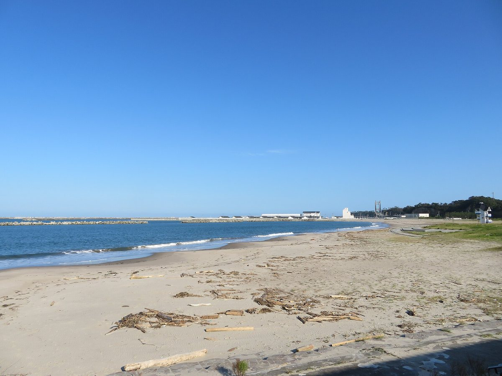
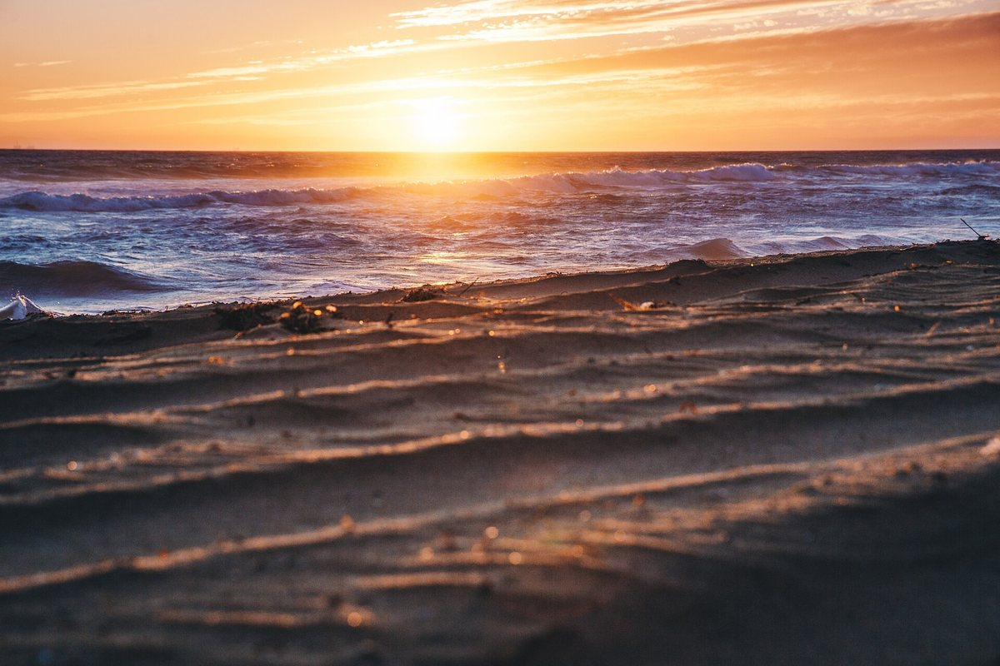
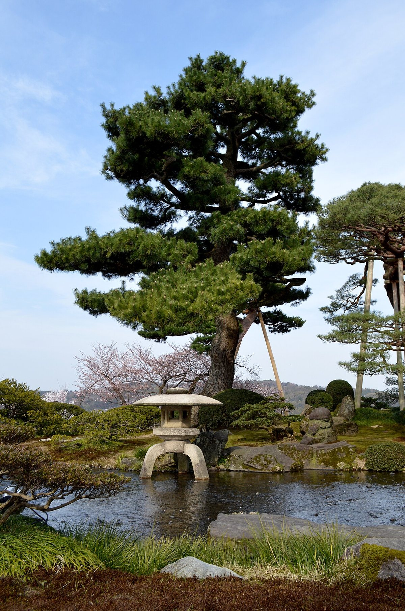
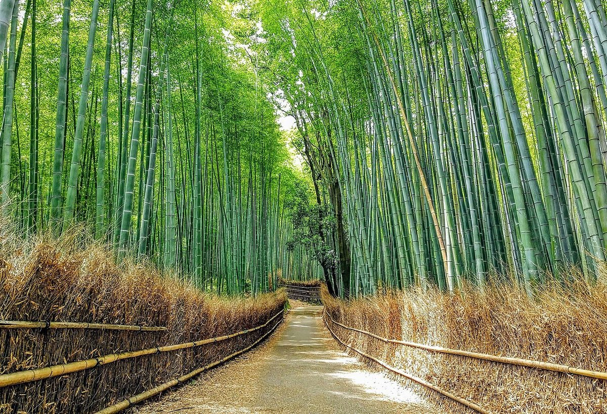

海辺の町で、ひと息。
制作側の案
ナガタカフェ
福井県小浜市、三丁町のあたりにあるカフェです。このページは、お店のことを知っていただくための試作のサンプルです。
営業時間・メニュー・料金などの詳しい情報は準備中です。お電話でお問い合わせください。
町と海のイメージ

写真はイメージです 
写真はイメージです 
写真はイメージです
お店の情報
- 住所
- 福井県小浜市小浜香取 14 三丁町ながた
- 営業時間・定休日
- 準備中(お問い合わせください)
- nagatacafe
このサンプルの考え方(制作側の案)
お店のご意向をうかがう前の、制作側の案です。海の気配と、ゆっくりした時間の流れが伝わるような、落ち着いた色と余白のページにしています。
お店の想い・こだわりは、お聞きしたうえでページに反映します。